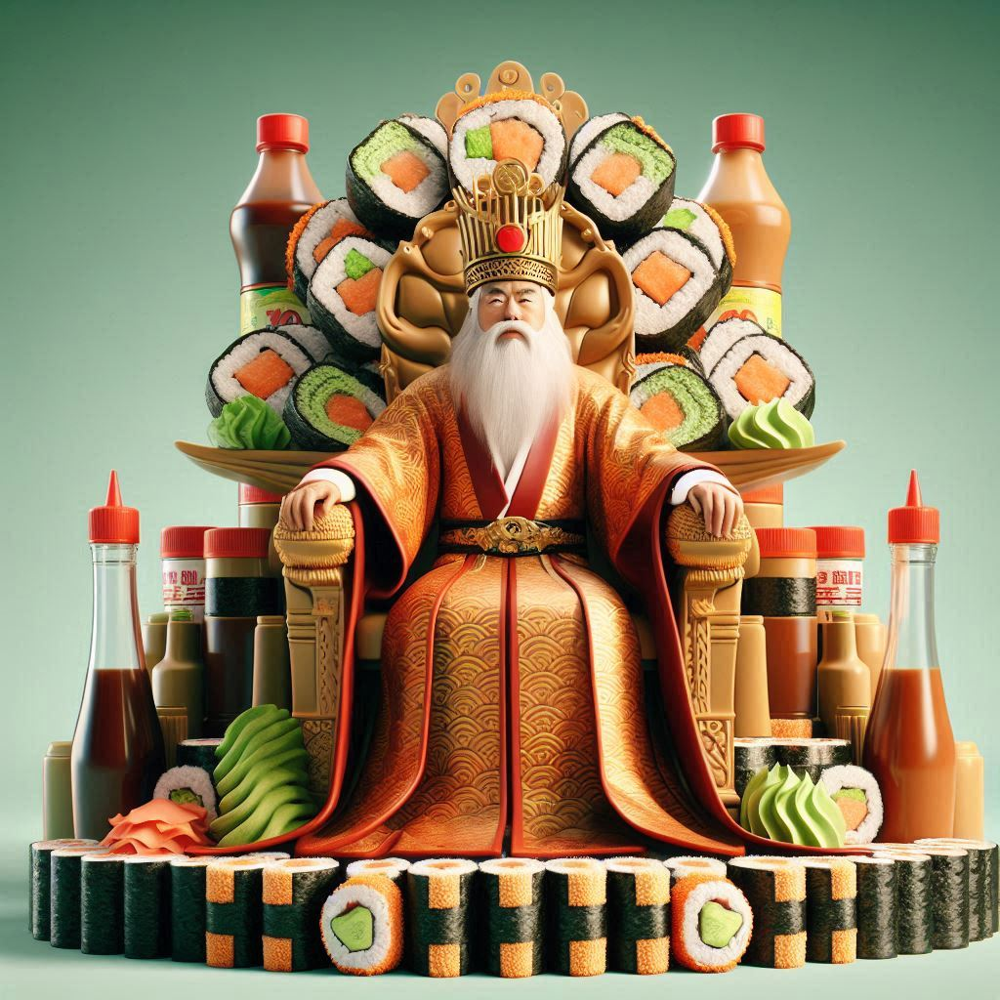

Sobre Nosotros y Nuestro Restaurante
Hace 400 años, la familia Liu se estableció como una dinastía de maestros susheros en Shanghái, perfeccionando un arte que ni siquiera era suyo.
Con cuchillos afilados y recetas improvisadas, los Liu se hicieron famosos por su sushi con ingredientes exóticos y técnicas que parecían más difíciles de lo que eran.
El último Liu, confundido entre Google Maps y el destino, aterrizó en Temuco, Chile, donde decidió abrir "SUSHITO SHAN-GAI".
Aquí, el sushi es un homenaje irónico a siglos de supuesta tradición. No hay pretensiones: solo rollos deliciosos, frescos, y un toque de humor familiar.
Porque en "SUSHITO SHAN-GAI," lo importante no es la autenticidad de la historia, sino que el sushi sea tan bueno que te olvides de preguntar si lo que cuentas es verdad.
Ubicación y Horario de SUSHITO SHAN-GAI
Nos encontramos en el corazón de Temuco, en Av. San Martín 01092, porque incluso los dragones necesitan una buena dirección para encontrar su sushi favorito.
Abrimos todos los días, todo el día. Sí, leíste bien, porque en SUSHITO SHAN-GAI no hay descanso; los dragones que atienden el local no duermen, solo hacen sushi.
Así que si vienes a las 3 a.m. o a las 3 p.m., siempre habrá un rollo esperando por ti. Solo recuerda no hacer preguntas difíciles, nuestros dragones se ponen nerviosos.
Nuestra Galería de Sushi
Lo que Dicen Nuestros Clientes
- "¡El mejor sushi que he probado! - Juan"
- "Un servicio excepcional y sabores increíbles. - María"
- "Definitivamente volveré. - Pedro"